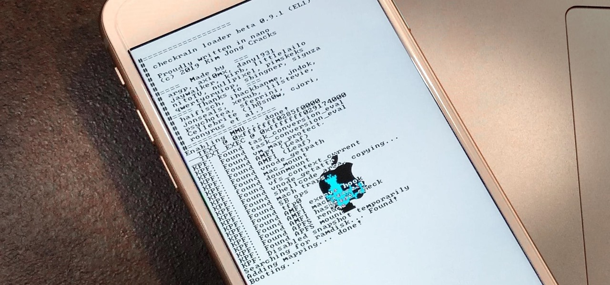
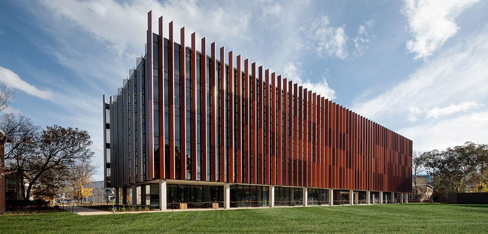

About me
Hi there, my name is Muhammad Hafizh Hasyim but you can call me Hafizh.
I am a first year international student at ANU studying Bachelors of
Advanced Computing from Indonesia.
My passion
When my parents brought me to tech/gadget stores back in 2010 to jailbreak their iPads and iPhones, I instantly became intrigued by the idea of "hacking" and having more control of our personal devices. Though I've never attempted to learn coding till Year 12 of high school, I have always been interested in how programs and code could make complex software in gadgets and the internet.
Other than my passion in technology, I also have interests in architecture, automobile, and nature landscape which you can find here.
Hobbies
For my hobbies, I try to balance my life with enough learning fulfilment and also enjoyment. Which is also how I have customised my daily routine. Some hobbies that I enjoy doing:
- Watching tech-videos
- Self learn programming languages and/or code in general
- Reading non-fiction books
- Playing basketball
- Regular morning gym workouts
Goals
I try to have my hobbies/interests align with the bigger goals in my life and future career. Some of the goals that I always keep in mind:
Academic Goals
- Achieve and maintain an HD during university
- Land an internship by the second year of university
Life Goals
 `
`
- Become an independent and responsible person
- Become financially independent by my first job
- Nourish my relationship with friends and family
Mission Statement
Besides for assignment purposes, I created this website in hopes that I can continuously improve on it the next few years and have it as my own e-portfolio as I do internships and coding projects.